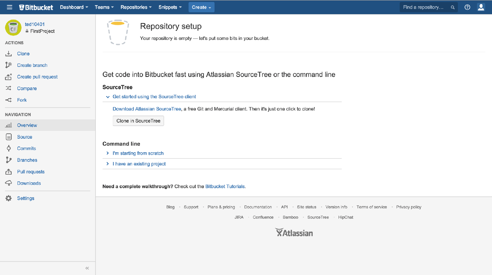
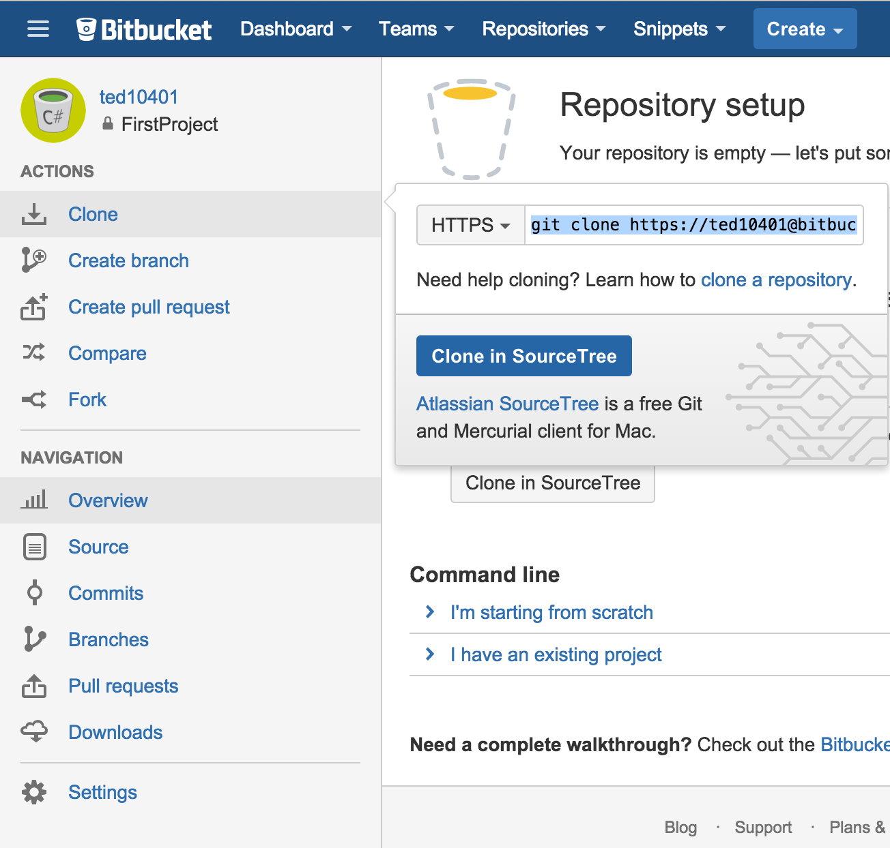
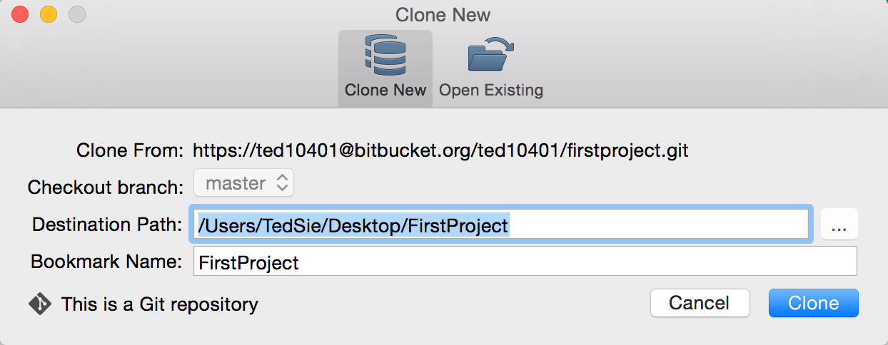
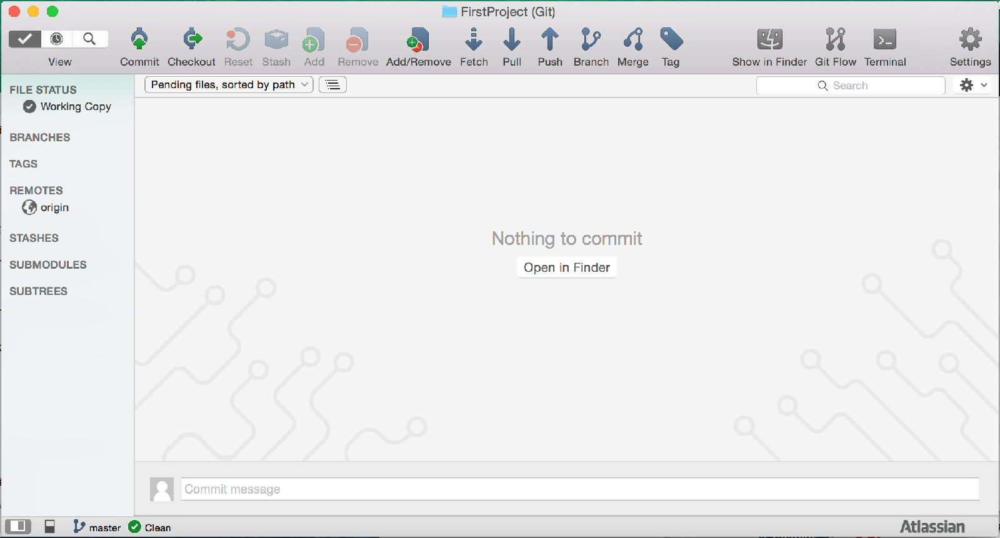

在上一篇中
利用了 Bitbucket 來建立新的 Git 專案
但目前專案中還沒有任何東西

我們需要使用到另一個軟體 SourceTree
下載並安裝 SourceTree
回到 Bitbucket 頁面並點選 Clone/Clone in SourceTree

這邊會開啟 SourceTree 並需要選擇專案路徑
(專案路徑可以隨意命名)
(並不需要與 Bitbucket 上的專案名稱相同)
按下 Clone

成功後會開啟這個畫面
到這邊就完成了下載 Repository 到本地端電腦的步驟
